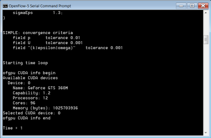

GPU v0.2 Linear Solver Library for OpenFOAM
For the latest version of ofgpu for OpenFOAM visit "GPU v1.1 Linear Solver Library for OpenFOAM".
Jan. 17, 2012: Updated instructions for OpenFOAM 2.1.x
ofgpu v0.2 is the latest version of our free GPL library that provides GPU (sometimes referred to as GPGPU) linear solvers for OpenFOAM® v2.1.x. Sponsored by the Microsoft DPE team, the library targets NVIDIA CUDA devices on Windows, Linux, and (untested) Mac OS X. While this effort is still in the experimental stage, GPU acceleration holds the promise of providing significant speed up at relatively low cost and with low power consumption compared to other alternatives. If you want to try our ofgpu library with OpenFOAM then we recommend that you use either a dedicated (i.e., not displaying graphics) high-performance NVIDIA graphics card or a TESLA card.
OpenFOAM on Windows using ofgpu
OpenFOAM GUI
Are you looking for a GUI driven, integrated simulation environment with GPU support for Windows and Linux with NVIDIA CUDA devices incorporating a selection of the RANS OpenFOAM solvers and various import/export filters?

Background
In our ofgpu library we use the Cusp library's Krylov solvers to produce equivalent GPU (CUDA) versions of the standard OpenFOAM linear solvers:
- PCG - Preconditioned conjugate gradient solver for symmetric matrices (e.g., p)
- PBiCG - Preconditioned biconjugate gradient solver for asymmetric matrices (e.g., Ux, k)
We also have support in ofgpu for the Cusp preconditioners:
- no
- diagonal
- smoothed_aggregation - equivalent to Algebraic Multi-Grid (AMG)
- scaled_bridson_ainv
- bridson_ainv
- nonsym_bridson_ainv
Prerequisites
- You are familiar with the OpenFOAM build process
- You are familiar with CMake
- You have a CUDA-capable NVIDIA device, such as a TESLA C2075
Preparation
Install and test:
- Latest NVIDIA graphics driver
- Latest CUDA Toolkit (v4.0, including Thrust) and GPU Computing SDK
- Cusp v0.2.0 - sparse linear algebra library
- CMake - cross platform make
- OpenFOAM 2.1.x source distribution on Linux - following "OpenFOAM 2.1.x on Windows 64-bit with MS MPI". Note that these modifications for Windows also work for Linux
Build Procedure
This build procedure assumes single precision.
- Download our free GPL licensed ofgpu library [last update Sept. 15, 2011 to v0.2].
- Configure and generate the build system for ofgpu with CMake, Set the
CMAKE_INSTALL_PREFIXvariable to<ofgpu-root>/install - Build ofgpu
- On *nix systems
make installand create the symbolic link:ln -s <ofgpu-root>/install/release/lib <ofgpu-root>/install/lib - For Windows you will need to build ofgpu natively using Visual Studio and then transfer ofgpu.dll and ofgpu.lib to your Linux system for cross compiling. Place your natively compiled Windows files in
<ofgpu-root>/install/win/libon your Linux system.
- On *nix systems
- Patch your OpenFOAM source with our CUDA modifications. Note that this is the same source code patch that adds Windows support for OpenFOAM 2.1.x.
chmod ug+x <OpenFOAM-root>/src/gpu/Allwmake- Build OpenFOAM in the usual manner, but with the addition of the environment variables:
WM_GPU='CUDA'CUDA_ARCH_PATH=<ofgpu-root>WM_PRECISION_OPTION=SP
Note that single precision is required. Double precision is untested.
The build process will produce the following 2 new OpenFOAM libraries:
$(WM_PROJECT_DIR)/platforms/<platform>/lib/cuda/[lib]gpu.[so|dll]$(WM_PROJECT_DIR)/platforms/<platform>/lib/gpuless/[lib]gpu.[so|dll]
Under Windows you will need to have the $(WM_PROJECT_DIR)/platforms/<platform>/lib/cuda directory in your executable path to use the library.
Example Case
For an example of a GPU-enabled case try pitzDailyGpu.
The GPU library is loaded in <case>/system/controlDict with:
functions
{
cudaGpu
{
type cudaGpu;
functionObjectLibs ("gpu");
cudaDevice 0;
}
}
As an example the p and U|k|epsilon linear solvers in the <case>/system/fvSolution file are modified as follows:
p
{
solver PCGgpu;
preconditioner smoothed_aggregation;
tolerance 1e-06;
relTol 0.01;
}
"(U|k|epsilon)"
{
solver PBiCGgpu;
preconditioner diagonal;
tolerance 1e-05;
relTol 0.1;
}
Notes
OpenFOAM is a registered trademark of OpenCFD and is unaffiliated with Symscape.
Feedback
Questions? Ideas? Problems?

Comments
What's <ofgpu-root> in my case?...
Question 1: What's "ofgpu-root" in my case?
I am using $HOME/OpenFOAMSP/ as installation directory on Linux Mint
I unpacked ofgpu-0-2.tgz in that directory which leaves me with the following directory structure:
$HOME/OpenFOAMSP/ofgpu-0-2/scr/ofgpu
Question 2: There is no /install nor /install/lib directory.
Should I create these directories manually?
Review Previous Comments
Answers:
Before you proceed any further I suggest you take a moment to review the comments on the previous ofgpu version.
A common mistake is to apply the source code patch to the wrong git version of OpenFOAM. You need to exactly match the git version to the patch:
Can't build ofgpu with current gcc and g++
Finding:
ofgpu can't be build on my Linux Mint system as gcc 4.5.2 and g++ 4.5.2 are not supported by cuda 4.0.
The gcc and g++ versions have to be < 4.5 so I installed version 4.4 as well.
Question:
Is there a way to invoke make install with reference to gcc and g++ version 4.4?
Reconfigure cmake
You'll need to clean out your current cmake config and use:
CC=gcc-4.4 CXX=g++-4.4 ccmake ...Also you will need to use the same compiler for OpenFOAM.
Problem with reconfiguration
I used CC=gcc-4.4 CXX=g++-4.4 ccmake /home/user/OpenFOAMSP/ofgpu-0-2/src and did configuration: CMAKE_INSTALL_PREFIX /home/user/OpenFOAMSP/ofgpu-0-2/install
The result was:
make install
[ 25%] Building NVCC (Device) object ofgpu/./ofgpu_generated_sparsematrixsystem.cu.o
In file included from /usr/local/cuda/include/cuda_runtime.h:59:0,
from "command-line":0:
/usr/local/cuda/include/host_config.h:82:2: error: #error -- unsupported GNU version! gcc 4.5 and up are not supported!
CMake Error at CMakeFiles/ofgpu_generated_sparsematrixsystem.cu.o.cmake:200 (message):
Error generating
/home/user/OpenFOAMSP/ofgpu-0-2/ofgpu/./ofgpu_generated_sparsematrixsystem.cu.o
make[2]: *** [ofgpu/./ofgpu_generated_sparsematrixsystem.cu.o] Fehler 1
make[1]: *** [ofgpu/CMakeFiles/ofgpu.dir/all] Fehler 2
make: *** [all] Fehler 2
Question:
Apparently gcc and g++ 4.4 were not used - What's the problem?
CUDA 4.0 doesn't support gcc >= 4.5
"/usr/local/cuda/include/host_config.h:82:2: error: #error -- unsupported GNU version! gcc 4.5 and up are not supported!"
Why not try asking a question on the NVIDIA CUDA Forum about how to configure the CUDA compiler to use a non-system default compiler and report back.
Thrust problem?
Finding:
I managed to create libofgpu.so but there were some thrust related errors:
make install
[ 25%] Building NVCC (Device) object ofgpu/./ofgpu_generated_sparsematrixsystem.cu.o
[ 50%] Building NVCC (Device) object ofgpu/./ofgpu_generated_ofgpuconfig.cu.o
[ 75%] Building NVCC (Device) object ofgpu/./ofgpu_generated_pbicg.cu.o
/usr/local/cuda/include/thrust/detail/tuple.inl(321): warning: calling a host function("thrust::device_reference ::operator =") from a __device__/__global__ function("thrust::detail::cons , thrust::detail::cons , thrust::null_type> > ::operator =") is not allowed
/usr/local/cuda/include/thrust/detail/tuple.inl(321): warning: calling a host function("thrust::device_reference ::operator =") from a __device__/__global__ function("thrust::detail::cons , thrust::detail::cons , thrust::null_type> > ::operator =") is not allowed
/usr/local/cuda/include/thrust/detail/tuple.inl(321): warning: calling a host function("thrust::device_reference ::operator =") from a __device__/__global__ function("thrust::detail::cons , thrust::detail::cons , thrust::null_type> > ::operator =") is not allowed
/usr/local/cuda/include/thrust/detail/tuple.inl(321): warning: calling a host function("thrust::device_reference ::operator =") from a __device__/__global__ function("thrust::detail::cons , thrust::detail::cons , thrust::null_type> > ::operator =") is not allowed
/usr/local/cuda/include/thrust/detail/tuple.inl(321): warning: expression has no effect
/usr/local/cuda/include/thrust/detail/tuple.inl(321): warning: expression has no effect
[100%] Building NVCC (Device) object ofgpu/./ofgpu_generated_pcg.cu.o
/usr/local/cuda/include/thrust/detail/tuple.inl(321): warning: calling a host function("thrust::device_reference ::operator =") from a __device__/__global__ function("thrust::detail::cons , thrust::detail::cons , thrust::null_type> > ::operator =") is not allowed
/usr/local/cuda/include/thrust/detail/tuple.inl(321): warning: calling a host function("thrust::device_reference ::operator =") from a __device__/__global__ function("thrust::detail::cons , thrust::detail::cons , thrust::null_type> > ::operator =") is not allowed
/usr/local/cuda/include/thrust/detail/tuple.inl(321): warning: calling a host function("thrust::device_reference ::operator =") from a __device__/__global__ function("thrust::detail::cons , thrust::detail::cons , thrust::null_type> > ::operator =") is not allowed
/usr/local/cuda/include/thrust/detail/tuple.inl(321): warning: calling a host function("thrust::device_reference ::operator =") from a __device__/__global__ function("thrust::detail::cons , thrust::detail::cons , thrust::null_type> > ::operator =") is not allowed
/usr/local/cuda/include/thrust/detail/tuple.inl(321): warning: expression has no effect
/usr/local/cuda/include/thrust/detail/tuple.inl(321): warning: expression has no effect
Scanning dependencies of target ofgpu
Linking CXX shared library libofgpu.so
[100%] Built target ofgpu
Install the project...
-- Install configuration: "None"
-- Installing: /home/user/OpenFOAMSP/ofgpu-0-2/install/None/lib/libofgpu.so
-- Removed runtime path from "/home/user/OpenFOAMSP/ofgpu-0-2/install/None/lib/libofgpu.so"
Question: How can I fix that?
PS: I'll post how to configure the CUDA compiler to use a non-system default compiler supporting cuda 4.0 once the issues above are solved - maybe I missed something.
Just Warnings
They are just warnings, ignore them.
Regarding 2. directory structure - it's different
The file structure I end up with is: $HOME/OpenFOAMSP/ofgpu-0-2/install/None/lib
There is neither a directory $HOME/OpenFOAMSP/ofgpu-0-2/install/release/lib nor $HOME/OpenFOAMSP/ofgpu-0-2/install/lib created
Question:
How to adjust the file directory structure/symlink?
Creating ofgpu-0-2 with non-system default compiler
The following is based on Linux Mint 11 with default gcc and g++ version 4.5.2 which is not supported by cuda 4.0. Cuda 4.0 requires a version < 4.5:
ofgpu-root is assumed to be $HOME/OpenFOAMSP/ofgpu-0-2 or practically speaking /home/user/OpenFOAMSP/ofgpu-0-2, the complete path to the ofgpu-0-2 directory and the gcc and g++ version used is version 4.4.
Using CC=gcc-4.4 CXX=g++-4.4 ccmake ... is useless from a cuda perspective as nvcc doesn't take these values from ccmake, but they're nevertheless required from a C perspective.
What to do step-by-step:
1. Install gcc-4.4 and g++-4.4 which are in the repository (binaries will be located in /usr/bin after installation)
2. Create a directory e.g. sudo mkdir /opt/gcc44
3. Create a symbolic for gcc: sudo ln -s /usr/bin/gcc-4.4 /opt/gcc44/gcc
4. Create a symbolic for g++: sudo ln -s /usr/bin/g++-4.4 /opt/gcc44/g++
5. Edit nvcc.profile located in /usr/local/cuda/bin/ and add compiler-bindir=/opt/gcc44 at the end of the file (e.g. sudo gedit...; cuda 4.0 will now be using gcc-4.4 and g++-4.4)
6. Configure ofgpu: CC=gcc-4.4 CXX=g++-4.4 ccmake ofgpu-root/src (remember CC=gcc-4.4 CXX=g++-4.4 are required from a C perspective)
6a. set CMAKE_BUILD_TYPE to None
6b. set CMAKE_INSTALL_PREFIX variable to ofgpu-root/install
7. make install
CMAKE_BUILD_TYPE = release
Thanks for the update. Just a minor issue - you need to set:
CMAKE_BUILD_TYPE = release
This will fix your 'None' path problem too:
"$HOME/OpenFOAMSP/ofgpu-0-2/install/None/lib"
Plenty of xx.H files not found... during compilation
Finding:
./Allwmake results in plenty of errors related to xx.H files which are "missing" e.g. volFieldsFwd.H, fvCFD.H... pages over pages.
When I search for the files, they're somewhere but not where they're expected.
...
make[2]: *** [Make/linux64Gcc44SPOpt/alphaContactAngleFvPatchScalarField.o] Fehler 1
SOURCE=multiphaseMixture.C ; g++ -m64 -Dlinux64 -DWM_SP -Wall -Wextra -Wno-unused-parameter -Wold-style-cast -O3 -DNoRepository -ftemplate-depth-100 -IalphaContactAngle -I/home/user/OpenFOAMSP/OpenFOAM-2.0.1-SP/src/transportModels -I/home/user/OpenFOAMSP/OpenFOAM-2.0.1-SP/src/transportModels/incompressible/lnInclude -I/home/user/OpenFOAMSP/OpenFOAM-2.0.1-SP/src/transportModels/interfaceProperties/lnInclude -I/home/user/OpenFOAMSP/OpenFOAM-2.0.1-SP/src/finiteVolume/lnInclude -IlnInclude -I. -I/home/user/OpenFOAMSP/OpenFOAM-2.0.1-SP/src/OpenFOAM/lnInclude -I/home/user/OpenFOAMSP/OpenFOAM-2.0.1-SP/src/OSspecific/POSIX/lnInclude -fPIC -c $SOURCE -o Make/linux64Gcc44SPOpt/multiphaseMixture.o
could not open file upwind.H for source file MULES.C
could not open file upwind.H for source file LTSInterFoam.C
[Edit: removed long list of same errors]
...
Question:
How can I fix that? (the patch workerd fine)
Find and fix the first error
Find and fix the first error. These missing files errors are because of an earlier error.
Have you compiled OpenFOAM before? This is a common feature of compiling OpenFOAM.
Problem is: no ThirdParty sources found - skipping
Finding:
The first error is "no ThirdParty sources found - skipping" but when I check $WM_THIRD_PARTY_DIR in the terminal, it's:
"/home/user/OpenFOAM/ThirdParty-2.0.1-SP"
and pwd gives me:
"/home/user/OpenFOAM/ThirdParty-2.0.1-SP"
Question:
Any idea what could cause this problem?
Just an info message
Assuming you want to build scotch? It is not necessary for GPU. Also that is not an error, it is just an info message. Capture the output from the build process and explicitly search for 'error'.
If you do want to build scotch then it looks like you are missing step 8a (maybe more?) in the build process "OpenFOAM 2.0.x on Windows 64-bit with MS MPI"
"8. [optional] Install the ThirdParty-2.0.1 source and build scotch according to:
a. ln -s ThirdParty-2.0.1 $(WM_THIRD_PARTY_DIR)"
terminate called after throwing an instance of 'std::bad_alloc'
There were another two obstacles:
1. The location of mpi.h on Linux Mint 11 was not where OpenFoam expected it:
Solution:
sudo ln -s /etc/alternatives/mpi/mpi.h /usr/include/mpi.h
2. The file gpulibCUDA needs to be in the subdirectory of $HOME/OpenFOAM/OpenFOAM-2.0.1-SP/wmake/rules/ that corresponds to the Gcc used.
Solution (I am using Gcc4.4 on a x86_64 system to support cuda 4.0):
Copy gpulibCUDA which can be found in some of the compiler directories to $HOME/OpenFOAM/OpenFOAM-2.0.1-SP/wmake/rules/linux64Gcc44
ISSUE: Test failed
When I run the test case pitzDaily using the comands blockMesh and simpleFoam, I get the following error:
Create time
Create mesh for time = 0
Reading field p
Reading field U
Reading/calculating face flux field phi
Selecting incompressible transport model Newtonian
Selecting RAS turbulence model kEpsilon
kEpsilonCoeffs
{
Cmu 0.09;
C1 1.44;
C2 1.92;
sigmaEps 1.3;
}
SIMPLE: convergence criteria
field p tolerance 0.01
field U tolerance 0.001
field "(k|epsilon|omega)" tolerance 0.001
Starting time loop
ofgpu CUDA info begin
Available CUDA devices
Selected CUDA device: 0
ofgpu CUDA info end
Time = 1
terminate called after throwing an instance of 'std::bad_alloc'
what(): std::bad_alloc
Abgebrochen
What's the problem?
errors, Fehler 1, fatal error...
Finding:
I tried an installation from scratch based on my protocol from previous attempts as parallel processing didn't work on the SP version and ofgpu wouldn't work either.
./Allwmake ....
...problems start here:
/usr/bin/ld: cannot find -lofgpu
collect2: ld returned 1 exit status
make: *** [/home/user/OpenFOAM/OpenFOAM-2.0.1-SP/platforms/linux64Gcc44SPOpt/lib/cuda/libgpu.so] Fehler 1
+ wmake all utilities
+ [ NONE = NONE ]
+ exit 0
make[2]: »/home/user/OpenFOAM/OpenFOAM-2.0.1-SP/platforms/linux64Gcc44SPOpt/bin/expandDictionary« ist bereits aktualisiert.
SOURCE=writeFluentScalarField.C ; g++ -m64 -Dlinux64 -DWM_SP -Wall -Wextra -Wno-unused-parameter -Wold-style-cast -O3 -DNoRepository -ftemplate-depth-100 -I/home/user/OpenFOAM/OpenFOAM-2.0.1-SP/src/finiteVolume/lnInclude -IlnInclude -I. -I/home/user/OpenFOAM/OpenFOAM-2.0.1-SP/src/OpenFOAM/lnInclude -I/home/user/OpenFOAM/OpenFOAM-2.0.1-SP/src/OSspecific/POSIX/lnInclude -fPIC -c $SOURCE -o Make/linux64Gcc44SPOpt/writeFluentScalarField.o
SOURCE=applyBoundaryLayer.C ; g++ -m64 -Dlinux64 -DWM_SP -Wall -Wextra -Wno-unused-parameter -Wold-style-cast -O3 -DNoRepository -ftemplate-depth-100 -I/home/user/OpenFOAM/OpenFOAM-2.0.1-SP/src/finiteVolume/lnInclude -I/home/user/OpenFOAM/OpenFOAM-2.0.1-SP/src/turbulenceModels -I/home/user/OpenFOAM/OpenFOAM-2.0.1-SP/src/turbulenceModels/incompressible/RAS/RASModel -I/home/user/OpenFOAM/OpenFOAM-2.0.1-SP/src/transportModels -I/home/user/OpenFOAM/OpenFOAM-2.0.1-SP/src/transportModels/incompressible/singlePhaseTransportModel -I/home/user/OpenFOAM/OpenFOAM-2.0.1-SP/src/meshTools/lnInclude -IlnInclude -I. -I/home/user/OpenFOAM/OpenFOAM-2.0.1-SP/src/OpenFOAM/lnInclude -I/home/user/OpenFOAM/OpenFOAM-2.0.1-SP/src/OSspecific/POSIX/lnInclude -fPIC -c $SOURCE -o Make/linux64Gcc44SPOpt/applyBoundaryLayer.o
applyBoundaryLayer.C:38:19: fatal error: fvCFD.H: Datei oder Verzeichnis nicht gefunden
compilation terminated.
In file included from writeFluentScalarField.C:31:0:
writeFluentFields.H:32:23: fatal error: volFields.H: Datei oder Verzeichnis nicht gefunden
compilation terminated.
make[2]: *** [Make/linux64Gcc44SPOpt/applyBoundaryLayer.o] Fehler 1
make[2]: Das Target »/home/user/OpenFOAM/OpenFOAM-2.0.1-SP/platforms/linux64Gcc44SPOpt/bin/applyBoundaryLayer« wurde wegen Fehlern nicht aktualisiert.
make[3]: *** [Make/linux64Gcc44SPOpt/writeFluentScalarField.o] Fehler 1
make[1]: *** [applyBoundaryLayer] Fehler 2
SOURCE=writeFluentVectorField.C ; g++ -m64 -Dlinux64 -DWM_SP -Wall -Wextra -Wno-unused-parameter -Wold-style-cast -O3 -DNoRepository -ftemplate-depth-100 -I/home/user/OpenFOAM/OpenFOAM-2.0.1-SP/src/finiteVolume/lnInclude -IlnInclude -I. -I/home/user/OpenFOAM/OpenFOAM-2.0.1-SP/src/OpenFOAM/lnInclude -I/home/user/OpenFOAM/OpenFOAM-2.0.1-SP/src/OSspecific/POSIX/lnInclude -fPIC -c $SOURCE -o Make/linux64Gcc44SPOpt/writeFluentVectorField.o
In file included from writeFluentVectorField.C:31:0:
writeFluentFields.H:32:23: fatal error: volFields.H: Datei oder Verzeichnis nicht gefunden
compilation terminated.
.... and continue for several pages because about 40 x.H files are not found (they're all present somewhere in the installation directory).
What's causing these problems?
PS: "Fehler" is the german word for error
ofgpu is missing
"/usr/bin/ld: cannot find -lofgpu"
I thought you solved this problem first time around?
Check ofgpu is built and in the correct location.
What is the correct location for what?
Which file is supposed to be in: /usr/bin/ld/?
'ld' is a program
"Which file is supposed to be in: /usr/bin/ld/?"
None, 'ld' is the system library loader program that is reporting the error.
Has this single precision been successful analyzing wings.
Has this application been used / tested to be suitable for wing performance analysis (lift/drag...)?
I am wondering whether OpenFoam will do the job in single precision.
Works fine for incompressible wall function examples
I haven't tested specific wing cases but single precision was used for all our incompressible, wall function examples. For low-Reynolds number turbulence models (y+ ~= 1) you will likely struggle with single precision.
If you do try some wing cases be sure to report back your findings, thanks.
Maybe an approach to overcome these "limitations"
The paper describes an approach to obtain DP results based on SP GPU with a correction on the CPU.
http://www.mpi-inf.mpg.de/~strzodka/papers/public/GoStTu05double.pdf
Maybe an inspiration for a future release.
OpenFOAM 2.1.x
Hello to everyone!
Does it work with the new version?
ofgpu isn't currently available for OpenFOAM 2.1.x
Would you like to help with funding?
I would like, but i'm not
I would like, but i'm not good.
I still not compile the patch for the previous version!
I hope that the the new patch will be created soon
All tests fail the same way:
I installed ofgpu as described and the libraries are in place but the tests with pitzDaily and airFoil2D failed exactly the same way. Here's the log file:
/*---------------------------------------------------------------------------*\
| ========= | |
| \\ / F ield | OpenFOAM: The Open Source CFD Toolbox |
| \\ / O peration | Version: 2.0.1-SP |
| \\ / A nd | Web: www.OpenFOAM.org |
| \\/ M anipulation | |
\*---------------------------------------------------------------------------*/
Build : 2.0.1-SP-2a7a68737dba
Exec : simpleFoam
Date : Jan 06 2012
Time : 04:13:25
Host : tenno-EP45-UD3R
PID : 32650
Case : /home/tenno/OpenFOAM/tenno-2.0.1-SP/run/tutorials/incompressible/simpleFoam/airFoil2D
nProcs : 1
sigFpe : Enabling floating point exception trapping (FOAM_SIGFPE).
fileModificationChecking : Monitoring run-time modified files using timeStampMaster
allowSystemOperations : Disallowing user-supplied system call operations
// * * * * * * * * * * * * * * * * * * * * * * * * * * * * * * * * * * * * * //
Create time
Create mesh for time = 0
Reading field p
Reading field U
Reading/calculating face flux field phi
Selecting incompressible transport model Newtonian
Selecting RAS turbulence model SpalartAllmaras
SpalartAllmarasCoeffs
{
sigmaNut 0.66666;
kappa 0.41;
Cb1 0.1355;
Cb2 0.622;
Cw2 0.3;
Cw3 2;
Cv1 7.1;
Cv2 5;
}
SIMPLE: convergence criteria
field p tolerance 1e-05
field U tolerance 1e-05
field nuTilda tolerance 1e-05
Starting time loop
ofgpu CUDA info begin
Available CUDA devices
Selected CUDA device: 0
ofgpu CUDA info end
Time = 1
terminate called after throwing an instance of 'std::bad_alloc'
what(): std::bad_alloc
Aborted
My hardware: Nvidia GTX 480
What's the problem?
Hardware not recognized
Under "Available CUDA devices" there should be some info on your device, number of processors, memory, etc. and there isn't, so I guess your hardware isn't being recognized.
ofgpu CUDA info example
Your info should look something like:
ofgpu CUDA info begin
Available CUDA devices
Device: 0
Name: GeForce GTS 360M
Capability: 1.2
Processors: 12
Cores: 96
Memory (bytes): 1073741824
Selected CUDA device: 0
ofgpu CUDA info end
solved, the problem was the driver
things work after manually installing the driver (devdriver_4.0_linux_64_270.41.19.run) following these instructions:
http://www.r-tutor.com/gpu-computing/cuda-installation/cuda4.0-ubuntu
I ran simpleFoam in the motorBike case using ofgpu (limiting the functions in the controlDict to #include "forceCoeffs" as e.g. #include "streamLines" stalls the execution) and did the same (with all functions enabled) on a standard installation running simpleFoam in parallel on 4 cores.
SimpleFoam runtimes:
ofgpu: 745s
standard: 925s
Good to hear
Good to hear it's working and thanks for the benchmark timings.
hi to everyone, i followed
hi to everyone,
i followed all the instruction and i have this error:
###################################################
Starting time loop
--> FOAM FATAL ERROR:
Unknown function type cudaGpu
Table of functionObjects is empty
From function functionObject::New(const word& name, const Time&, const dictionary&)
in file db/functionObjects/functionObject/functionObject.C at line 74.
FOAM exiting
###################################################
what is the reason?
i checked and i notice that i have only one libraries:
$(WM_PROJECT_DIR)/platforms//lib/gpuless/[lib]gpu.[so|dll]
thanks
no i have both of them.. what
no i have both of them.. what is the reason?
Missing 'functionObjectLibs("gpu")'
Sounds like you are missing the entry functionObjectLibs("gpu") in your system/controlDict. Make sure it contains the following section:
functions
{
cudaGpu
{
type cudaGpu;
functionObjectLibs ("gpu");
cudaDevice 0;
}
}
Or the library loading failed because libofgpu.so and libgpu.so are not in your LD_LIBRARY _PATH - which is handled by Sections 3 + 6 in the instructions.
I'm having similar problem
I'm having similar problem too. I got the following message and still google for way to fix it.
Message:
Create time
Create mesh for time = 0
Reading transportProperties
Reading field p
Reading field U
Reading/calculating face flux field phi
--> FOAM FATAL IO ERROR:
keyword PISO is undefined in dictionary "/home/hai/Desktop/pitzDailyGpu/system/fvSolution"
file: /home/hai/Desktop/pitzDailyGpu/system/fvSolution from line 22 to line 56.
From function dictionary::subDict(const word& keyword) const
in file db/dictionary/dictionary.C at line 461.
FOAM exiting
Case setting wrong
I don't see how your problem is similar - it doesn't relate to GPU settings. It appears that you are trying to use a PISO solver without the correct setup. The example case provided uses simpleFoam.
Convert pitzDaily3D les to use of-gpu
I was able to build openfoam-2.1.x with of-gpu-v2 and ran the example pitzDailyGpu.
I would like to convert the les/pitzDaily3D to use of-gpu-v2.
I added the example functions definition to the controlDict
and updated the fvSolution to use:
solver PCGgpu;
preconditioner diagonal;
and
solver PBiCGgpu;
preconditioner diagonal;
Is the of-gpu-v2: gpuless lib for LES ?
Should I configure a different controlDict functions definition for gpuless?
btw I am new to openfoam+ofgpu, your help is much appreciated.
gpu and gpuless work with all executables
Both libraries (gpu and gpuless) are independent of the OpenFOAM executables (LES, RANS, etc.) they hook to the underlying solvers, so yes gpuless will work with LES executables.
To use the gpuless solvers you will need to modify your environment variables prior to running OpenFOAM, i.e., don't set WM_GPU. Your controlDict remains the same.
What Processors means?
Hi! I've successfully compiled ofgpu v0.2 and I've tried to solve a couple of tutorial cases.
My 'CUDA info' at the beginning of log file is
ofgpu CUDA info begin
Available CUDA devices
Device: 0
Name: GeForce GT 540M
Capability: 2.1
Processors: 2
Cores: 96
Memory (bytes): 2147155968
Selected CUDA device: 0
ofgpu CUDA info end
What indicate the 'Capability' and 'Processors' voices?
I've seen that in your benchmark you have 12 processors, why I have just 2 of them?
My results so far are not so good in terms of solving time, can this problem be related to the low number of processors?
Last question: when I solve a 'simple' case with GPU one 'simpleFoam' process lies on one CPU, if I type 'top' on a terminal I can see it! Is that normal?
Thank you very much and congratulations for the excellent work!
Elia
Capability and Processors
Capability = CUDA Compute Capability, for more see http://developer.nvidia.com/cuda-gpus
Processors = Processors on the board, for background see http://en.wikipedia.org/wiki/CUDA
"why I have just 2 of them?"
Maybe it has misreported the number of processors on your card. Cores are the important number anyway.
The GPU performs just the linear solver operations, everything else is still on the CPU, so it will still be busy.
Performance depends on a number of things, it's mostly about cores and memory - a TESLA C2075 card has 448 cores and 6 GB http://www.nvidia.com/object/personal-supercomputing.html
Also you need to give the GPU a lot of work to see speedups, so the case has to be large.
little benchmark
Thanks for reply!
Here is a little benchmark in return...
I've tried to increase the number of total elements of my case, creating a modified_pitzDaily with 1.7kk cells.
I've set diagonal preconditioner also for pressure in order to strain the solver (about 1000 iteration each step to solve p).
I've run 100 step of simpleFoam with 1,2,3,4 CPU and with the GPU for three times (in order to obtain mean values of execution time).
My hardware is:
IntelCore i5-2410M 2.3GHz
NVIDIA GeForce GT 540M, 96 CUDA Cores, 2048 MB
My results are (execution time rate):
1CPU/GPU = 2.7
2CPU/GPU = 2.0
3CPU/GPU = 2.1
4CPU/GPU = 2.0
GPU take half the time of CPUs, without engaging all the processors.
Thanks for the great work you are doing!
errors while compiling ofgpu
Hi all,
when compiling ofgpu with gcc4.4 I get the following errors:
(these are the first 2)
[ 25%] Building NVCC (Device) object ofgpu/./ofgpu_generated_sparsematrixsystem.cu.o
/opt/ofgpu-0-2/src/ofgpu/sparsematrixsystem.h(26): error: namespace "thrust::detail" has no member "default_device_space_tag"
/usr/local/cuda/include/thrust/detail/contiguous_storage.h(33): error: name followed by "::" must be a class or namespace name
detected during:
instantiation of class "thrust::detail::contiguous_storage [with T=ofgpu::index, Alloc=ofgpu::MemorySpace]"
/usr/local/cuda/include/thrust/detail/vector_base.h(46): here
instantiation of class "thrust::detail::vector_base [with T=ofgpu::index, Alloc=ofgpu::MemorySpace]"
/usr/local/cuda/include/cusp/array1d.h(54): here
instantiation of class "cusp::array1d [with T=ofgpu::index, MemorySpace=ofgpu::MemorySpace]"
/usr/local/cuda/include/cusp/array2d.h(212): here
instantiation of class "cusp::array2d [with ValueType=ofgpu::index, MemorySpace=ofgpu::MemorySpace, Orientation=cusp::column_major]"
/usr/local/cuda/include/cusp/ell_matrix.h(123): here
instantiation of class "cusp::ell_matrix [with IndexType=ofgpu::index, ValueType=ofgpu::real, MemorySpace=ofgpu::MemorySpace]"
/opt/ofgpu-0-2/src/ofgpu/sparsematrixsystem.h(66): here
/usr/local/cuda/include/thrust/detail/contiguous_storage.h(34): error: name followed by "::" must be a class or namespace name
detected during:
instantiation of class "thrust::detail::contiguous_storage [with T=ofgpu::index, Alloc=ofgpu::MemorySpace]"
/usr/local/cuda/include/thrust/detail/vector_base.h(46): here
instantiation of class "thrust::detail::vector_base [with T=ofgpu::index, Alloc=ofgpu::MemorySpace]"
/usr/local/cuda/include/cusp/array1d.h(54): here
instantiation of class "cusp::array1d [with T=ofgpu::index, MemorySpace=ofgpu::MemorySpace]"
/usr/local/cuda/include/cusp/array2d.h(212): here
instantiation of class "cusp::array2d [with ValueType=ofgpu::index, MemorySpace=ofgpu::MemorySpace, Orientation=cusp::column_major]"
/usr/local/cuda/include/cusp/ell_matrix.h(123): here
instantiation of class "cusp::ell_matrix [with IndexType=ofgpu::index, ValueType=ofgpu::real, MemorySpace=ofgpu::MemorySpace]"
/opt/ofgpu-0-2/src/ofgpu/sparsematrixsystem.h(66): here
/usr/local/cuda/include/thrust/detail/contiguous_storage.h(35): error: name followed by "::" must be a class or namespace name
detected during:
instantiation of class "thrust::detail::contiguous_storage [with T=ofgpu::index, Alloc=ofgpu::MemorySpace]"
/usr/local/cuda/include/thrust/detail/vector_base.h(46): here
etc...
...
27 errors detected in the compilation of "/tmp/tmpxft_00000fe6_00000000-4_sparsematrixsystem.cpp1.ii".
CMake Error at CMakeFiles/ofgpu_generated_sparsematrixsystem.cu.o.cmake:256 (message):
Error generating file
/opt/ofgpu-0-2/ofgpu/./ofgpu_generated_sparsematrixsystem.cu.o
make[2]: *** [ofgpu/./ofgpu_generated_sparsematrixsystem.cu.o] Fout 1
make[1]: *** [ofgpu/CMakeFiles/ofgpu.dir/all] Fout 2
make: *** [all] Fout 2
I have tried different compilers, (gcc3.3, gcc4.3, gcc4.4) and different thrust libraries (1.5.1 and 1.6.0) but no success...
Does someone have a guess how to continue?
Niels
Match CUSP to THRUST
You have to match the CUSP version to the THRUST version in the CUDA v4 distribution. I don't think this is a gcc compiler issue.
applying patch
I succeeded in compiling the ofgpu library, with thrust v1.3.0 and cusp 0.2.0.
Now I am trying to apply the patch v7-mingw-openfoam-2-1-x.patch on my OpenFOAM 2.1.1 installation on Suse 12.1 linux by "patch -p1 < v7-mingw-openfoam-2-1-x.patch" in the directory "/opt/OpenFOAM-2.1.1/src" of my OpenFOAM installation.
This results in a number of "can't find file to patch at input line ..." - errors.
Should I install OpenFOAM in a different way, is it the correct patch?
Niels
Match git commit
You have to match the patch to the exact git commit in http://www.symscape.com/openfoam-2-1-x-on-windows-64-mpi
You should execute the patch command in the directory
/opt/OpenFOAM-2.1.xcompiling openfoam
i succeeded in cloning and patching openfoam 2.1.x:
git clone http://github.com/OpenFOAM/OpenFOAM-2.1.x.git
cd OpenFOAM-2.1.x
git checkout 971882b657c1730e27a8df8dcf06e6d5e5a47991
patch -p0 ...
then compiling OpenFOAM succeeds mostly, but only one gpu library results:
$(WM_PROJECT_DIR)/platforms//lib/gpuless/[lib]gpu.[so|dll]
this library is not generated:
$(WM_PROJECT_DIR)/platforms//lib/cuda/[lib]gpu.[so|dll]
what can be the problem?
Niels
sorry for posting trice, it didn't put the complete post the first times
Ed: No problem. I deleted the other posts.
set WM_GPU
Did you set the environment variables in step 6? Specifically:
WM_GPU='CUDA'CUDA_ARCH_PATH=<ofgpu-root>Also are you aware that Caedium Professional provides a GPU option to run a selection of OpenFOAM RANS solvers?
problems running cudaGpu
right now I compile OpenFoam (On Suse 12.1) with the following settings in my .bashrc:
export FOAM_INST_DIR="/opt"
source /opt/OpenFOAM-2.1.x/etc/bashrc
export FOAM_GPU_LIBBIN='/opt/OpenFOAM-2.1.x/platforms/linux64GccDPOpt/lib/cuda'
export WM_GPU="CUDA"
export CUDA_ARCH_PATH="/opt/ofgpu-0-2"
export WM_PRECISION_OPTION="SP"
export WM_MPLIB="SYSTEMOPENMPI"
export WM_COMPILER="Gcc46"
LD_LIBRARY_PATH=$LD_LIBRARY_PATH:/opt/OpenFOAM-2.1.x/platforms/linux64GccDPOpt/lib/cuda:/opt/OpenFOAM-2.1.x/platforms/linux64GccDPOpt/lib/gpuless:/opt/ofgpu-0-2/install/release/lib
export LD_LIBRARY_PATH
PATH=$PATH:/opt/ThirdParty-2.1.x/platforms/linux64Gcc46/paraview-3.12.0/bin:
export PATH
(however I compile the thirdparty with export WM_MPLIB="OPENMPI")
These settings override the openfoam bashrc settings.
the "export FOAM_GPU_LIBBIN" resulted in generating the two libraries "libgpu.so"
now running pitzDailyGpu results in:
(log.SimpleFoam)
-- FOAM FATAL ERROR:
Unknown function type cudaGpu
Table of functionObjects is empty
From function functionObject::New(const word& name, const Time&, const dictionary&)
in file db/functionObjects/functionObject/functionObject.C at line 74.
do you have an idea to continue?
OpenFOAM Environment Settings are Wrong
I suggest you try running OpenFOAM without the GPU. By the look of your settings I assume you are not familiar with running or compiling standard OpenFOAM. That is not the way to set up your OpenFOAM 2.1.x environment. It also appears you are mixing environment settings between single precision (SP) and double precision (DP).
Did you consider porting ofgpu to ViennaCl (OpenCl)...
...since particularly the AMD ATI 7970 GPU series offers 4Tflops (single precision) 1Tflops (double precision) and 3GB to 6GB memory at a price of 400 to 600EUR respectively?
This would give us low cost access to y+ = 1 problems.